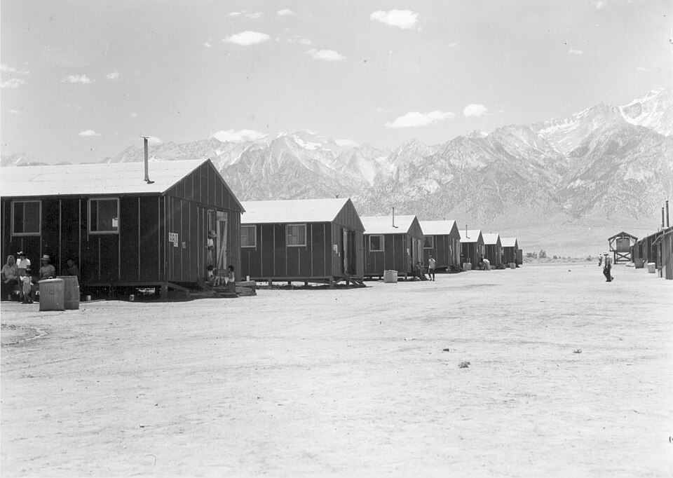

FILE A42-HS-042 // HISTORY & SOCIETIES
Japanese American Incarceration and the Withheld Evidence
ASSESSMENT: Wartime officials ignored contrary evidence; the later suppression finding is documented.
The U.S. government incarcerated Japanese Americans during World War II, citing military necessity and potential sabotage. Military and intelligence reports found no individualized evidence of mass disloyalty, yet key information was not presented to the Supreme Court. The case is a documented rights violation and evidentiary concealment, not a claim of secret Japanese control.


Claim and historical context
Executive Order 9066 followed Pearl Harbor and enabled exclusion from the West Coast. General DeWitt’s military rationale was challenged by reports from the FBI and Office of Naval Intelligence finding no need for mass removal. The War Relocation Authority administered incarceration of roughly 120,000 people, most citizens.
Chronology and primary record
In Korematsu v. United States, the government filed a brief that omitted or misrepresented intelligence findings. In the 1980s coram nobis proceedings, attorneys uncovered withheld documents, including the Ringle Report. Federal courts vacated the convictions based on government misconduct.
What the record establishes
The 1983 Commission on Wartime Relocation and Internment of Civilians concluded the policy was driven by “race prejudice, war hysteria, and a failure of political leadership,” not military necessity. Executive and military records support this finding, while the Supreme Court’s 1944 ruling accepted the wartime rationale.
Competing interpretations and counterevidence
The Japanese government’s wartime espionage activity existed, but authorities had no evidence tying it to the Japanese American population as a whole. The withheld reports undermine the blanket justification. Historians distinguish the documented policy from unsupported claims of a coordinated plot by individual detainees.
Calibrated verdict
The verdict is mass incarceration justified through a rationale officials knew was contradicted by their own evidence. The suppression record is unusually clear because the documents were discovered and litigated. This case demonstrates institutional concealment, not merely later disagreement about policy.
Evidence that could change this assessment
Newly released military records could clarify decision-making and local implementation. Any defense of mass exclusion would need to address the contemporaneous intelligence assessments and the government’s omissions that were central to the coram nobis cases.
Source notes and limitations
These selected records and named research sources address Japanese American Incarceration and the Withheld Evidence; each citation supports only the specific historical point identified in its note.
- U.S. National Archives, “Japanese American Relocation Records”Digitized records and finding aids for wartime incarceration.
- Commission on Wartime Relocation and Internment of Civilians, “Personal Justice Denied”Official commission report on causes, evidence, and reparations.
- Densho Digital Repository, Lt. K. D. Ringle’s “Report on the Japanese Question”Digitized primary intelligence assessment from January 1942.